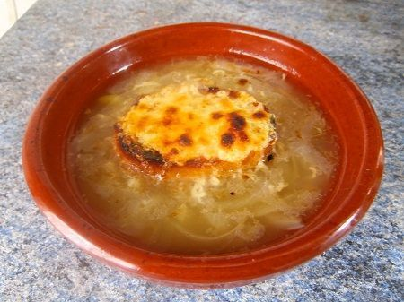

Recetas De Sopas Caseras
Home
Privacy policy
Terms and Conditions
Photo gallery
Contacts
Privacy policy
Posted by
Someone
2021.06.18 22:13 •
Comments (64)
•
Full article

Blog
About
Categories
Sopas caseras - 9,045 recetas caseras- Cookpad
8 Recetas de sopas caseras que no te puedes perder .
Recetas de sopas caseras para cada día | Demos la vuelta al .
15 recetas de sopas caseras FÁCILES y muy sanas .
10 recetas de sopas fáciles para preparar en 30 minutos
5 recetas de sopas para todos los días! - Paulina Cocina
37 ideas de Sopas caseras | sopas caseras, recetas de .
Recetas de sopas y cremas caseras - Comedera.Com
34 Recetas de sopas, cremas y caldos para consentirte .
Sopa de Pollo | Recetas Nestlé
Photo #1
Menu
Sopas caseras - 9,045 recetas caseras- Cookpad
8 Recetas de sopas caseras que no te puedes perder .
Recetas de sopas caseras para cada día | Demos la vuelta al .
15 recetas de sopas caseras FÁCILES y muy sanas .
10 recetas de sopas fáciles para preparar en 30 minutos
5 recetas de sopas para todos los días! - Paulina Cocina
37 ideas de Sopas caseras | sopas caseras, recetas de .
Recetas de sopas y cremas caseras - Comedera.Com
34 Recetas de sopas, cremas y caldos para consentirte .
Sopa de Pollo | Recetas Nestlé